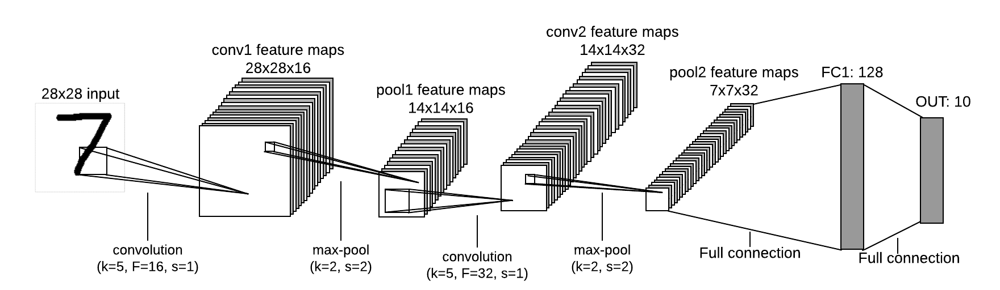

I use two models in this project:
1. Feed forward neural network (FNN) is written on numpy and is not very accurate.
2. Convolutional neural network is created with PyTorch and is much more accurate.
The models were trained on MNIST dataset.
This model has the simplest architecture:
- Input layer size is 28*28
- Hidden layer size is 100
- Output layer size is 10
- Weights are initialized using Xavier weight initialization;
- Loss method performs forward and backward passes and computes loss with l2 regularization;
- The model is trained using stochastic gradient descent.
CNN model is more complex
- Weights are initialized using Xavier weight initialization;
- During training dropout is applied to conv layers and first fully connected layer;